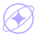
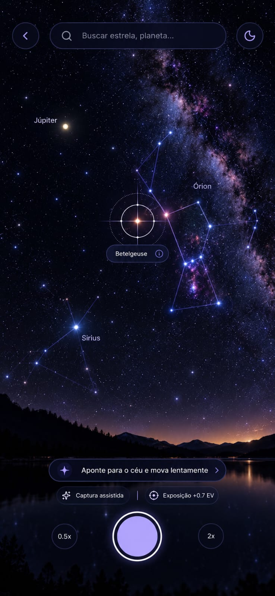
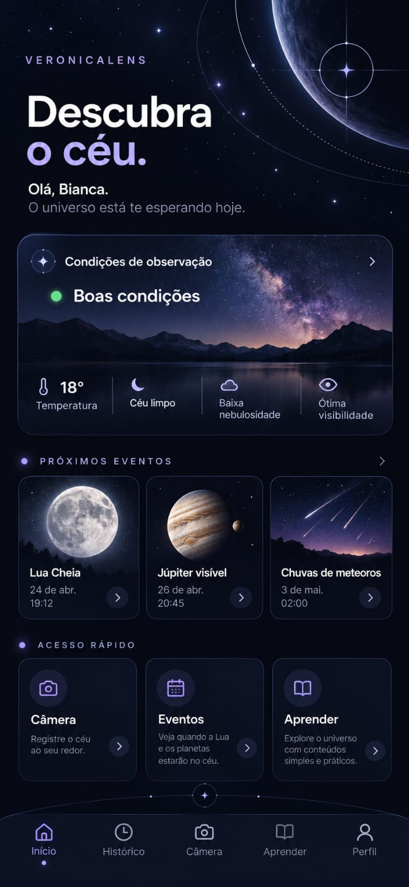

Fotografia astronômica
Registre suas descobertas e guarde um pedacinho do céu com você.

VeronicaLensExplorar · Registrar · Aprender
Seu guia para observar o céu, registrar imagens incríveis e transformar a curiosidade em descobertas. Astronomia de um jeito simples, no seu ritmo.

Registre suas descobertas e guarde um pedacinho do céu com você.
Fique por dentro de eclipses, chuvas de meteoros e encontros planetários.
Da primeira estrela às grandes perguntas. Aprenda no seu próprio ritmo.
Descubra constelações e conheça os objetos celestes ao seu redor.
Descubra o céu
Do primeiro olhar às grandes descobertas, o VeronicaLens reúne ferramentas, conhecimento e inspiração para tornar a astronomia parte da sua vida.
Você não precisa saber por onde começar. Só precisa olhar para cima.
Conheça a experiência
Vamos conversar
Tem uma dúvida, uma ideia ou algo para compartilhar?